開卷有益 ／
分科測驗 ／ 生物 ／ 114 年114 年分科測驗生物試題與答案
這一頁是民國 114 年分科測驗生物的整份歷屆試題，共 49 題，題目與標準答案出自大考中心 分科測驗歷年試題（依著作權法 §9，考試試題不受著作權保護），其中 49 題附有詳解。以下逐題列出題幹、選項與答案；要計時作答或記錄成績，請用線上練習。
大學入學考試中心原始場次代碼：分科生物
線上作答這一科 →
全部 49 題
第 1 題
抗體主要由何種單體分子脫水聚合而成?
（A） 磷脂質（B） 胺基酸（C） 脂肪酸（D） 單醣答案：（B）
詳解與考點 正解：抗體是免疫球蛋白，屬於蛋白質；蛋白質由胺基酸之間脫水形成胜肽鍵，連結成多胜肽鏈後再摺疊成具有辨識功能的抗體，故選 B。
A：磷脂質是細胞膜的重要成分，主要由甘油、脂肪酸與磷酸相關基團組成，不是蛋白質的單體。
C：脂肪酸可參與形成三酸甘油酯或磷脂質；它不會以胜肽鍵聚合成抗體。
D：單醣可脫水聚合成多醣，例如澱粉或肝醣；抗體的主鏈則是胺基酸組成。
本題考點：蛋白質（protein）——看到酵素、抗體或受體等大分子時，先判斷其基本單體為胺基酸；脫水合成（dehydration synthesis）——胺基酸脫去水分子形成胜肽鍵，連成多胜肽；免疫球蛋白（immunoglobulin）——抗體的專一性來自蛋白質立體構形，不是脂質或醣類聚合物。
第 2 題
下列何者為促進植物產生離層的主要激素?
（A） 生長素（B） 乙烯（C） 離層酸(ABA)（D） 吉貝素答案：（B）
詳解與考點 正解：植物器官脫落時，離層細胞的分離受到乙烯促進；乙烯會提高離層區對細胞壁分解相關反應的作用，使葉、花或果實較容易脫落，故選 B。
A：生長素主要促進細胞伸長；適量生長素常可延緩離層形成，並非促進離層的主要激素。
C：離層酸名稱雖容易與離層混淆，但其主要功能與逆境反應、氣孔關閉及休眠相關，不能由名稱直接判為正解。
D：吉貝素主要促進莖伸長、種子萌發等生長反應，不是誘發器官脫落的主要訊號。
本題考點：乙烯（ethylene）——遇到果實成熟、衰老或器官脫落時，優先連結乙烯的作用；離層（abscission）——判斷脫落機制時，看離層細胞是否鬆離而非只看激素名稱；植物激素（plant hormones）——依主要生理效應區分乙烯、生長素、離層酸與吉貝素。
第 3 題
下列何者是參與後天性免疫反應的細胞之一?
（A） 樹突細胞（B） 皮膚細胞（C） 嗜中性球（D） 自然殺手細胞答案：（A）
詳解與考點 正解：後天性免疫反應需由抗原辨識啟動特異性的 T、B 細胞反應；（A）樹突細胞能攝取、處理並呈遞抗原以活化 T 細胞，是參與後天性免疫的重要細胞之一，故選 A。
B：皮膚細胞形成物理與化學屏障，主要阻止病原體進入，屬於第一線的先天性防禦，不是以抗原呈遞啟動特異性反應的細胞。
C：嗜中性球以吞噬病原體為主，反應快速且不具特定抗原記憶，屬於先天性免疫。
D：自然殺手細胞可辨識受感染或異常細胞並加以殺傷，但不需先經特異性抗原辨識與克隆增殖，分類上屬先天性免疫。
本題考點：抗原呈遞細胞（antigen-presenting cell）——看到樹突細胞時，連結其把抗原訊息交給 T 細胞的功能；先天與後天性免疫——以反應是否特異、是否形成記憶與是否需抗原呈遞來區分。
第 4 題
有關腎臟及尿液的敘述,下列何者正確?
（A） 健康人尿液中的葡萄糖濃度較血漿中高（B） 健康人尿液中的蛋白質含量較血漿稍低（C） 抗利尿激素可透過減少腎臟對於水的再吸收,而提升尿液濃度（D） 心房排鈉肽會抑制腎臟對鈉離子的再吸收答案：（D）
詳解與考點 正解：心房排鈉肽會降低腎臟對鈉離子的再吸收，使鈉與水較容易隨尿液排出；因此（D）正確，故選 D。
A：健康人的葡萄糖幾乎會在腎小管被再吸收，尿液中的葡萄糖濃度遠低於血漿，不會較高。
B：血漿中的蛋白質大多無法通過腎絲球濾過屏障，健康尿液中的蛋白質含量極低，不能以「較血漿稍低」描述。
C：抗利尿激素會增加腎臟對水的再吸收，讓尿液量減少、濃度上升；選項把再吸收方向顛倒了。
本題考點：心房排鈉肽（atrial natriuretic peptide，ANP）——判斷其作用時，看鈉再吸收是否下降與排鈉是否增加；抗利尿激素（antidiuretic hormone，ADH）——尿液濃縮時，連結到水再吸收增加而非減少。
第 5 題
花的構造與顏色決定傳粉的方式。不同的花用不同的策略吸引傳粉者,或行自花授粉而
不依賴傳粉者。有關植物花傳粉的敘述,下列何者正確?
（A） 風媒花通常產生較多量的花粉（B） 蟲媒花通常顏色較為暗淡且常呈現斑紋（C） 鳥媒花與蟲媒花的構造相似,不易區分（D） 自花授粉主要發生在單性花答案：（A）
詳解與考點 正解：風媒花不依賴特定動物搬運花粉，花粉抵達柱頭的機率較低，因此以大量花粉提高成功授粉的機會；（A）正確，故選 A。
B：蟲媒花通常以較鮮明的花色、氣味或蜜源吸引昆蟲，有些還有斑紋作為引導；「通常顏色較暗淡」與其吸引傳粉者的策略不符。
C：鳥媒花與蟲媒花可依花色、花形、蜜源位置與氣味等特徵區分。兩者都依賴動物傳粉，不表示構造必然相似而難以區分。
D：自花授粉需要同一朵花或同一植株具備可相遇的雌、雄生殖構造，主要不是發生在只有單一性別構造的單性花。
本題考點：風媒傳粉（wind pollination）——看到不靠動物媒介時，判斷是否以大量花粉補償低命中率；動物媒傳粉（animal pollination）——花色、氣味、蜜源與花形要連回特定傳粉者的吸引與接觸方式。
第 6 題
同域種化的現象在植物界較動物界常見,過程中常常牽涉到多倍體的形成。有關植物
種化的概念或現象,下列何者正確?
（A） 植物的同域種化過程中,經常依賴植物體具有無性繁殖或是自花授粉的能力（B） 植物演化過程中,染色體倍增的現象和自花授粉的方式沒有任何關聯（C） 人類對作物進行育種的過程中,從未使用形成異源多倍體的技術（D） 現代植物細胞組織培養技術發達之後,不影響人為產生新物種的機率答案：（A）
詳解與考點 正解：同域種化中新形成的多倍體個體起初數量很少，若能自花授粉或無性繁殖，便可自行延續族群，避免因找不到相同倍性配偶而消失；因此（A）正確，故選 A。
B：染色體倍增常使新多倍體與原族群產生生殖隔離，而自花授粉可幫助少數新多倍體建立族群，兩者在植物種化中可以相互配合，不能說毫無關聯。
C：人為育種可利用遠緣雜交與倍性加倍形成異源多倍體；「從未使用」把實際可用的育種策略絕對化了。
D：植物細胞組織培養可協助繁殖雜交或多倍體材料，也可能提高建立新族群的機會，不能說不影響人為產生新物種的機率。
本題考點：同域種化（sympatric speciation）——地理隔離不存在時，先找是否有倍性改變或生殖隔離；多倍體（polyploidy）——新倍體個體稀少時，判斷自交或無性繁殖是否能解除配偶不足的限制。
第 7 題
「不可能的漢堡」使用非肉製素食漢堡排,其外觀與口感和牛絞肉所製成的漢堡排
近似。此素食漢堡排在主原料大豆蛋白外,加入由酵母菌產生的大豆根瘤菌血紅蛋白,
使其具有肉汁感。依據上文及已習得知識,下列敘述何者正確?
（A） 肉汁感是由「不可能的漢堡」中,大豆根瘤菌血紅蛋白的核苷酸所造成（B） 「不可能的漢堡」使用的大豆根瘤菌血紅蛋白,是由重組DNA技術產生（C） 大豆根瘤菌血紅蛋白是一種特殊的大豆蛋白質（D） 酵母菌產生大豆根瘤菌血紅蛋白的機制,與其產生酒精的機制相同答案：（B）
詳解與考點 正解：題幹把主原料的大豆蛋白與由酵母菌製造的指定血紅蛋白區分開；若要讓酵母菌表現原本非其自身的蛋白質，須導入相應基因，這是重組 DNA 技術的應用，故選 B。
A：肉汁感是血紅蛋白這類蛋白質的功能與性質所造成，不是由核苷酸直接作為成品分子發揮作用；核苷酸是構成核酸的單體。
C：酵母菌只是表現宿主，不能由此否定大豆根瘤菌血紅蛋白的來源；但題幹所稱主原料是大豆種子儲藏蛋白，選項把這個特定血紅蛋白直接等同於主要大豆蛋白，題幹沒有提供這種分類依據，故不選。
D：酵母菌產生酒精是發酵代謝；產生指定的異源蛋白質則須經外源基因表現與蛋白質合成，兩者機制不同。
本題考點：重組 DNA 技術——看到微生物製造原本不屬於其自身的特定蛋白質時，判斷是否涉及外源基因導入與表現；基因表現——區分核酸作為遺傳資訊與蛋白質作為功能分子的角色；蛋白質分類——不能把生產宿主誤當成蛋白質來源，也不能把特定根瘤蛋白直接等同於主要種子儲藏蛋白。
第 8 題
某生進行生態訪查,採集到某一樣本,將其細胞放入含有不同鹽濃度的甲到丙液體中,
觀察其變化,如圖1所示。對照表1不同地區之鹽濃度後,某生最有可能採集到下列哪個
物種?
甲液體 乙液體 丙液體
表1 7% 3.5% 0.02%
高山河水 出海口 海洋
鹽度(%) <0.01 0.5-3.0 3.3-3.7
圖1
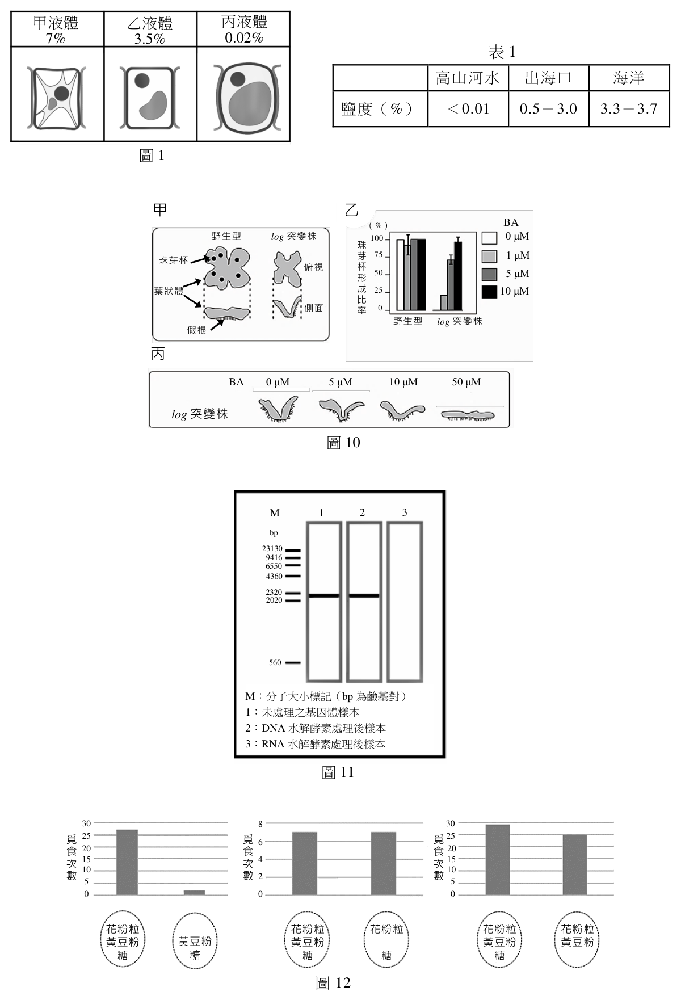
（A） 濁水溪上游岩石上的淡水藻（B） 淺海區的馬尾藻（C） 潮間帶的文蛤（D） 珊瑚礁的小丑魚答案：（B）
詳解與考點 正解：此題要把細胞在不同鹽濃度下的滲透壓反應，與表1所列棲地鹽度及物種的細胞類型一起判讀。樣本須同時符合海水環境與藻類細胞的特性；四個選項中，淺海區的（B）馬尾藻適應約3.5%的海水鹽度，故選 B。
A：濁水溪上游的淡水藻適應極低鹽度，與海洋鹽度範圍不符。
C：文蛤雖棲息潮間帶，仍是動物；分辨關鍵在題組同時考慮鹽度與細胞類型，不能只憑海岸棲地判斷。
D：小丑魚可生活於珊瑚礁海水，但屬動物；它符合海水鹽度，卻不符合題組用來辨識樣本的藻類細胞特性。
本題考點：滲透調節（osmoregulation）——把細胞放入不同鹽度溶液時，先判斷外液與細胞液的濃度關係；棲地鹽度（salinity）——依表格的鹽度範圍連結淡水、河口與海洋生物；植物與動物細胞（plant and animal cells）——同樣在海水生存不代表細胞類型相同，須同時使用構造與環境線索。
生物多樣性的維持可發揮生態系的服務功能。針對遺傳多樣性可知族群的遺傳 多樣性愈高,其個體間的各種表徵差異也較多,對於環境變動後的調適能力也較強, 族群的生存機會也更高。
第 9 題
對於遺傳多樣性較低族群之敘述,下列何者正確?
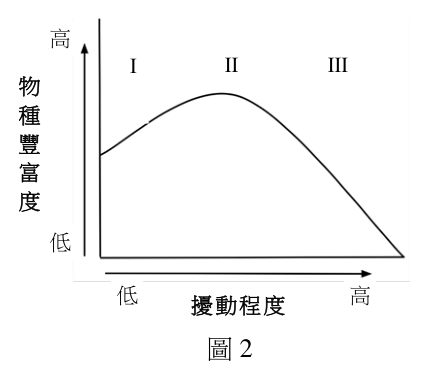
（A） 面對氣候變遷時,具有較高的適應能力（B） 不易發生由隱性等位基因所形成的同型合子（C） 棲地被切割後較可能使該族群局部滅絕（D） 可藉由馴化個體增大族群以增加其遺傳多樣性答案：（C）
詳解與考點 正解：題文指出遺傳多樣性高的族群較能調適環境變動；反過來看，遺傳多樣性低的族群可供選擇的性狀較少，棲地再被切割時更難維持足夠個體與基因交流，因此（C）較可能局部滅絕，故選 C。
A：遺傳多樣性低時，面對氣候變遷可供自然選擇的變異較少，適應能力通常較低而非較高。
B：遺傳多樣性低常伴隨近親交配機會增加，隱性等位基因形成同型合子的機率反而可能上升。
D：增加馴化個體的數量不等於增加遺傳多樣性；若來源基因相近，族群即使變大，基因組成仍可能狹窄。
本題考點：遺傳多樣性（genetic diversity）——判斷族群韌性時，看可供環境改變篩選的遺傳變異是否充足；棲地破碎化（habitat fragmentation）——族群變小且基因交流受阻時，優先判斷近親交配與局部滅絕風險是否上升。
第 10 題
圖2為某生態學家在甲生態系調查多年的結果示意圖。依此圖下列推論何者正確?
高
I II III
物
種
豐
富
度
低
低 高 擾動程度
圖2
（A） 這個生態系中,環境的低度擾動程度(I)最有利於維護當地的物種多樣性（B） 某年是甲地歷年來強烈颱風來襲最多次數的一年,則該年度會因此高擾動而促進
生物的多樣性（C） 物種豐富度在中度擾動程度(II)下最高（D） 高度擾動程度(III)有利於增加族群的遺傳多樣性答案：（C）
詳解與考點 正解：題幹的曲線把物種豐富度最高點放在中度擾動區 II，符合中度擾動假說：擾動太低時競爭優勢種可能排除其他種，擾動太高則許多種無法存活；介於兩者之間時可維持較多物種。（C）正確，故選 C。
A：（A）低度擾動區 I 的物種豐富度低於 II，不能說最有利於維護當地的物種多樣性。
B：（B）強烈颱風次數最多代表高擾動，圖示關係下高擾動會使物種豐富度下降；擾動不是愈強愈能增加多樣性。
D：（D）物種豐富度與族群遺傳多樣性是不同層次的指標。高度擾動常造成族群量下降或瓶頸，不能據此推論遺傳多樣性增加。
本題考點：中度擾動假說（intermediate disturbance hypothesis）——物種豐富度的峰值常出現在中等強度或頻率的擾動；物種多樣性（species diversity）——比較物種組成與數量層次；遺傳多樣性（genetic diversity）——需以族群內等位基因或表徵差異判斷，不能由物種數直接代替。
決定DNA 的結構是跨領域合作研究的成果,其中DNA X 光繞射分析(圖3)是關鍵。
第 11 題
有關DNA X光繞射分析的敘述,下列何者正確?
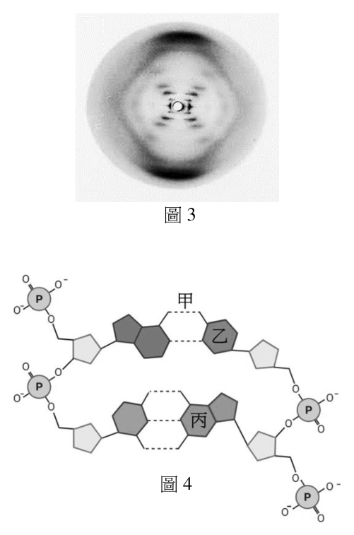
（A） 華生與克里克以DNA結晶進行X光繞射分析（B） 弗蘭克林利用X光繞射分析的結果,推測A與T配對,C與
G配對（C） 分析X光繞射圖推算雙股螺旋DNA分子的一個螺旋圈約
含有10對核苷酸（D） 分析X光繞射圖顯示雙螺旋每一圈的長度是3.4 mm
圖3答案：（C）
詳解與考點 正解：DNA 的 X 光繞射圖可提供螺旋構造的週期資訊；雙股 DNA 每一螺旋圈約有 10 對核苷酸，螺旋圈距約為 3.4 nm。（C）正確，故選 C。
A：（A）關鍵 X 光繞射資料主要由弗蘭克林、威爾金斯等人以 DNA 纖維取得；華生與克里克據此建立模型，並非繞射實驗執行者。
B：（B）A 與 T、C 與 G 的配對關係屬鹼基比例與雙螺旋互補配對的推論，不能直接說是由該繞射結果單獨推出。
D：（D）一圈螺旋的長度是約 3.4 nm，不是 3.4 mm；單位差了 10⁶ 倍。
本題考點：X 光繞射（X-ray diffraction）——由繞射圖樣判讀分子結構的週期性與螺旋特徵；DNA 雙股螺旋（DNA double helix）——一圈約 3.4 nm、約含 10 對核苷酸；證據與推論（evidence and inference）——要分辨資料直接支持的結構特徵與由多項證據整合出的配對模型。
第 12 題
圖4為組成DNA構造的部分結構,下列敘述何者正確?
圖4
（A） 甲為雙硫鍵（B） 乙為DNA結構中的核糖（C） 丙為鳥糞嘌呤(含氮鹼基G)（D） DNA的雙磷鍵是由兩個相鄰五碳醣上的5’磷酸根所形成答案：（C）
詳解與考點 正解：DNA 的含氮鹼基中，鳥糞嘌呤以 G 表示；（C）將丙辨識為鳥糞嘌呤，符合 DNA 的基本組成，故選 C。
A：（A）DNA 骨架與鹼基間不以雙硫鍵連接。雙硫鍵是含硫胺基酸側鏈常見的共價鍵，DNA 結構不以它作為連結。
B：（B）DNA 的五碳醣是去氧核糖，不是核糖；核糖是 RNA 的糖。
D：（D）相鄰核苷酸的磷酸二酯鍵連接一個去氧核糖的 3′ 羥基與下一個去氧核糖的 5′ 磷酸基，不是兩個 5′ 磷酸基彼此相連。
本題考點：DNA 核苷酸（DNA nucleotide）——由磷酸、去氧核糖與含氮鹼基組成；含氮鹼基（nitrogenous base）——G 代表鳥糞嘌呤；磷酸二酯鍵（phosphodiester bond）——以 3′—5′ 方向連接相鄰核苷酸形成糖磷酸骨架。
第 13 題 （多選）
若以藥物抑制正在分裂的細胞形成紡錘絲,則下列哪些功能可能會受到影響?
（A） 中心粒的形成（B） 影響二分體移動到細胞中央排列（C） 姊妹染色分體的分離（D） 子細胞的形成（E） 染色質的複製答案：（B）（C）（D）
詳解與考點 正解：紡錘絲是由微管構成的染色體運輸裝置，負責把染色體定位到赤道板、再拉開並分配到兩極。抑制其形成會直接妨礙二分體排列與姊妹染色分體分離，也會使正常的子細胞形成受影響，故選 BCD。
B：減數分裂第一次分裂時，二分體須藉紡錘絲連接並移動到細胞中央排列；沒有紡錘絲便無法完成這個定位步驟。
C：有絲分裂後期或減數分裂第二次分裂時，紡錘絲縮短以拉開姊妹染色分體，因此此功能會直接受抑制。
D：染色體若不能正確分離，細胞週期檢核點可能停滯，或形成染色體分配異常的子細胞；正常子細胞的形成因而可能受影響。
A：中心粒複製與紡錘絲完成組裝是不同層次的事件；中心粒可作為微管組織中心，但其形成不以既有紡錘絲為必要條件。
E：染色質複製主要在細胞週期的 S 期進行，早於 M 期的紡錘絲形成，兩者不構成直接依賴。
本題考點：紡錘體（mitotic spindle）——遇到染色體排列、分離或移動時，先判斷是否需要微管紡錘絲；二分體（bivalent）——減數分裂第一次分裂以同源染色體配對的二分體為單位排列；細胞週期（cell cycle）——DNA 複製在 S 期，染色體分離在 M 期，依時序排除誘答。
第 14 題 （多選）
有關生命起源與物種演化的敘述,下列哪些正確?
（A） 米勒於1953年做原始地球環境的模擬試驗,其目的是瞭解地球初始時的氣體組成（B） 歐帕林與霍爾丹均提出了有機物可在原始地球環境下,由無機物經化學過程形成的
假說（C） 孟德爾提出遺傳法則,並推論無窮大的族群不發生基因漂變及天擇的現象（D） 拉馬克的學說認為:物種的特性非一成不變,有些特性受環境影響而改變（E） 達爾文提出分歧演化的概念,以解釋加拉巴哥群島各種鷽鳥的物種關係答案：（B）（D）（E）
詳解與考點 正解：生命起源的化學演化與物種演化要分別看主張內容。（B）符合有機物可由無機物經自然化學過程形成的假說；（D）符合拉馬克認為生物特性可受環境影響而改變；（E）符合達爾文以共同祖先分化解釋加拉巴哥群島鷽鳥，故選 BDE。
B：歐帕林與霍爾丹皆提出早期地球的條件下，無機物可經化學反應產生有機物，屬化學演化的核心主張。
D：拉馬克不把物種視為完全固定；他主張環境與使用、廢用會造成特性改變，雖其遺傳機制後來未被支持，這一敘述仍符合其學說。
E：達爾文以不同島嶼鷽鳥的差異說明族群由共同祖先分化，屬分歧演化。
A：米勒的模擬實驗是檢驗在假定的早期地球氣體與能量條件下能否生成有機分子，不是用來測定地球初始大氣的實際組成。
C：無窮大族群、無基因漂變與無天擇是哈溫平衡的條件，不是孟德爾由遺傳法則所作的推論。
本題考點：化學演化（chemical evolution）——判斷生命起源學說時，區分「無機物形成有機物」與「直接形成現代生物」；拉馬克學說（Lamarckism）——辨認環境影響與獲得性特徵的主張，不把它混同為自然選擇；分歧演化（divergent evolution）——共同祖先的族群在不同環境累積差異時，用以解釋近緣物種分化。
第 15 題 （多選）
多細胞動物體因應其結構的差異、生長環境的特異與行為模式的不同,演化出許多型式
的呼吸系統。這些系統間的特性各異,但是多數系統包含下列哪些共同的性質?
（A） 規律收縮的肌肉組織,以控制氣體在系統中的流動（B） 潮溼的皮膜組織構造,以提供氣體交換的界面（C） 呼吸構造密布微血管網,以運輸需要交換的氣體（D） 擴大的氣體交換表面,以提升氣體交換的效率（E） 遍布全身的氣體通道,以增加氣體與體細胞的交換效率答案：（B）（C）（D）
詳解與考點 正解：題幹問的是多數呼吸系統共享的交換條件，而非每一類動物都具有的單一構造。有效氣體交換通常需要潮溼界面、與運輸系統接近的表面，以及足夠大的交換面積；因此（B）（C）（D）符合「多數」的共同性，故選 BCD。
B：氧氣與二氧化碳須先溶於水膜才能跨越細胞膜擴散，潮溼皮膜或潮溼呼吸表面是普遍的交換條件。
C：在以循環系統運輸氣體的多數動物中，呼吸構造旁的微血管網可維持濃度差並把氣體送往或帶離組織。
D：肺泡、鰓絲等構造都以增加表面積縮短擴散限制，提升單位時間的氣體交換量。
A：氣體流動可由外界水流、擴散或其他通氣機制造成，不是每一種呼吸系統都必有規律收縮的肌肉組織。
E：遍布全身的氣體通道是昆蟲氣管系統的特徵；多數動物改由血液循環把氣體運往全身，不能視為共同性。
本題考點：氣體交換（gas exchange）——先找潮溼、薄且可擴大的交換界面；擴散（diffusion）——表面積增大與濃度差維持都能提高交換效率；循環系統（circulatory system）——以微血管運輸氣體是多數動物的設計，不要和昆蟲氣管系統混為一談。
第 16 題 （多選）
有關光合作用的敘述,下列哪些正確?
（A） 類胡蘿蔔素主要吸收波長大於600 nm的光線（B） 葉綠素主要吸收紅、藍光（C） 在正常狀況下,光系統 I(PSI)的電子傳遞鏈產生ATP與NADPH（D） 兩分子的水可以產生一分子氧氣（E） 卡爾文循環產生的ADP與NADP+將會被再利用答案：（B）（D）（E）
詳解與考點 正解：光合作用的光反應由色素吸收光能並產生 ATP、NADPH，卡爾文循環再消耗這兩者固定二氧化碳。（B）是葉綠素的主要吸收區域；（D）是水分解釋放氧氣的計量關係；（E）是兩階段間再生載體的關係，故選 BDE。
B：葉綠素對紅光與藍紫光吸收較強，綠光多被反射或透射，因此葉片常呈綠色。
D：水的光解可寫為 2H₂O→O₂+4H+ +4e−，兩分子水可產生一分子氧氣。
E：卡爾文循環使用 ATP 與 NADPH 後，會產生 ADP 與 NADP+；這些分子回到光反應再被轉換為 ATP 與 NADPH。
A：類胡蘿蔔素主要吸收藍光至藍綠光，並非主要吸收波長大於 600 nm 的紅光。
C：光系統 I 可將電子用於還原 NADP+；ATP 的形成需整個光反應建立的質子梯度，不能把 ATP 與 NADPH 都歸為光系統 I 單獨的電子傳遞鏈產物。
本題考點：光合作用色素（photosynthetic pigments）——以吸收光譜判斷色素吸收哪段可見光，反射最多的波段才呈現顏色；水的光解（photolysis）——用 2H₂O 對應 1O₂ 檢核氧氣來源與計量；光反應與卡爾文循環（light reactions and Calvin cycle）——ATP、NADPH 與 ADP、NADP+ 在兩階段間循環再利用。
第 17 題 （多選）
「重症肌無力」是因為骨骼肌上的乙醯膽鹼受體因自體免疫反應而引起的疾病。重症肌
無力病患其骨骼肌受到影響,而自律神經系統同樣以乙醯膽鹼作為神經傳遞物質,
但因其受體與骨骼肌受體不同而仍能正常運作。下列哪些生理反應在重症肌無力患者
身上可能受到影響,導致其反應較正常人遲緩?
（A） 轉動眼球,以追蹤移動中物體的能力（B） 以木槌敲擊膝蓋時,所產生的膝跳反射動作（C） 受驚嚇時,瞳孔放大、心搏速率上升的現象（D） 溫度太低時,骨骼肌收縮顫抖產生熱能的能力（E） 緊張時,腸胃蠕動受抑制,造成消化不良的現象答案：（A）（B）（D）
詳解與考點 正解：題幹把病灶限定在骨骼肌神經肌肉接合處的菸鹼型乙醯膽鹼受體，因此判別每個反應時要追到最後的效應器。由骨骼肌完成的眼球轉動、膝跳反射與顫抖產熱會受影響；心肌、平滑肌及腺體的自律神經反應則不在此病灶範圍，故選 ABD。
A：轉動眼球依靠眼外肌收縮，眼外肌屬骨骼肌，須由運動神經元在神經肌肉接合處啟動，故可能變慢。
B：膝跳反射的感覺傳入與脊髓整合雖可正常，但最後仍要經運動神經元使股四頭肌收縮；末端接合處受損便會使反射動作受影響。
D：低溫顫抖產熱是骨骼肌快速反覆收縮，效應器與病灶相同，故可能遲緩。
C：瞳孔放大作用於虹膜平滑肌，心搏加速作用於心肌，皆屬自律神經調節；即使涉及乙醯膽鹼，其受體型別也與骨骼肌不同。
E：腸胃蠕動受抑制主要是自律神經作用於消化道平滑肌與腺體，並非骨骼肌神經肌肉接合處的反應。
本題考點：神經肌肉接合處（neuromuscular junction）——病灶題先定位在反射或運動路徑的哪一段；菸鹼型乙醯膽鹼受體（nicotinic acetylcholine receptor）——骨骼肌終板的受體與自律神經效應器受體不同；效應器（effector）——判斷是否受影響時，追查最後收縮的是骨骼肌、心肌或平滑肌。
第 18 題 （多選）
某同學自行研讀教科書,做群集和生態系的章節課程預習之後,作出以下的整理。
哪些說法正確?
（A） 初級演替(消長)與次級演替的最大差別,就是有沒有火災的發生（B） 維持生態系運作主要動力的太陽輻射能,是經由異營細菌吸收而來（C） 根據能量塔的轉移效益,可以將較複雜的食物網拆解成數條交錯的食物鏈（D） 目前地球生態系的碳循環和氮循環,曾受工業革命的影響而改變（E） 生態系的物種豐富度受當地氣象、地理位置、地形的複雜度所影響答案：（C）（D）（E）
詳解與考點 正解：群集與生態系的敘述要看其判準是否能跨不同環境成立。（C）可把食物網視為多條交錯的食物鏈並以營養階層分析能量流動；（D）人類工業活動確實改變碳、氮循環；（E）物種豐富度會受環境異質性與地理條件影響，故選 CDE。
C：食物網由多個取食關係組成，拆成數條食物鏈後，可分別比較各營養階層的能量轉移與耗損。
D：燃燒化石燃料增加大氣中的碳來源；工業化施肥與燃燒也改變活性氮的輸入與循環，兩者皆會影響生態系。
E：氣候、緯度或地理位置，以及地形造成的棲地多樣性，都會改變可利用資源與生態棲位數量，進而影響物種豐富度。
A：初級與次級演替的核心差異是起始地是否已有土壤與既有生物遺留；火災可造成次級演替，但不是唯一分界。
B：太陽輻射能主要由自營生物的光合作用捕捉，異營細菌須攝取既有有機物，不能作為生態系能量輸入的主要入口。
本題考點：生態演替（ecological succession）——以有無土壤與原有群集殘存判別初級、次級演替；食物網（food web）——需要分析能量流動時，可拆為交錯食物鏈與營養階層；生物地球化學循環（biogeochemical cycles）——判斷人類影響時，連結燃料燃燒、施肥與碳氮物質流。
第 19 題 （多選）
有關生物分類系統的敘述,下列哪些正確?
（A） 林奈考慮了生物源自共同祖先的概念,創立兩界的分類系統（B） 五界說的提出後,導致生物學界廢除林奈的層級分類系統（C） 顯微鏡解析度陸續進步的結果,是導致分類系統演變的原因之一（D） 五界說和六界說的差異,是因為某些生物細胞沒有粒線體（E） 三域的分類系統之所以能夠建立,是基於生物細胞核糖體RNA序列的相似性答案：（C）（E）
詳解與考點 正解：分類系統會隨觀察工具與分子資料而修正。（C）顯微鏡解析度提高可揭露原本無法辨認的細胞差異；（E）三域系統以核糖體 RNA 序列相似性推論親緣關係，兩者皆是分類演變的依據，故選 CE。
C：解析度提升後，研究者能辨認更細微的細胞構造與微生物差異，原有分類界線因此可能需要調整。
E：三域分類比較核糖體 RNA 序列，以分子相似度推論演化親緣，據此區分細菌、古菌與真核生物。
A：林奈建立兩界與階層分類時，共同祖先與演化尚不是其分類基礎，不能把後來的演化概念直接歸給他。
B：五界說是對界別的修訂，並未廢除界、門、綱、目、科、屬、種等層級分類架構。
D：五界說與六界說的差異在於是否將原核生物再分為細菌與古菌；原核細胞雖無粒線體，但這不是兩套分類系統的分界判準。
本題考點：生物分類——分類架構可保留層級，同時依新證據調整界別或域別；顯微鏡解析度——能辨識的細胞特徵增加時，分類證據也會改變；分子系統學——以核糖體 RNA 等序列相似度推論親緣，而非只看外部形態。
第 20 題 （多選）
下列有關本文的敘述,哪些正確?
（A） 表觀遺傳學與造成蜜蜂社會階級差異無關（B） 蜂后的基因表現與雄蜂及工蜂有所不同（C） 基因體DNA序列可因行為不同而改變（D） 本研究證明Dnmt3是蜂王漿的主要成分（E） 蜂后和工蜂的卵巢發育不一樣答案：（B）（E）
詳解與考點 正解：判斷以共同情境中「基因體未變而出現蜂后、工蜂分化」的設定為前提；在此條件下，表觀遺傳調控可改變基因表現，而蜂后與工蜂的分化包含卵巢發育差異。因此（B）與（E）成立，故選 BE。
B：蜂后、雄蜂與工蜂的形態、生理與發育途徑不同，相關基因在不同個體或組織中的表現狀態會有所差異。
E：蜂后能產卵，工蜂的卵巢發育則不完全；兩者卵巢的發育情形不同。
A：表觀遺傳正是用來說明基因體序列相同的個體，如何因環境或調控差異而呈現不同特徵，因此與社會階級差異有關。
C：表觀遺傳的重點是 DNA 甲基化、組蛋白修飾等調控改變基因表現，不等於改變 DNA 鹼基序列。
D：Dnmt3 是參與 DNA 甲基化的酵素；以 RNA 干擾降低其表現，是檢驗甲基化功能，不能據此證明它是蜂王漿的主要成分。
本題考點：表觀遺傳學（epigenetics）——看到基因體未變但性狀或基因表現不同時，判斷是否涉及 DNA 甲基化或組蛋白修飾；基因表現（gene expression）——表現差異不必由 DNA 序列改變造成；RNA 干擾（RNA interference）——降低特定 mRNA 或蛋白質以測試其功能，不用來鑑定食物成分。
第 21 題
為測試本文中假說使用RNA干擾技術的目的為何?
（A） 提升Dnmt3的mRNA表現（B） 降低蜂王漿的產量（C） 改變照護蜜蜂的餵食行為（D） 降低Dnmt3的蛋白質產量答案：（D）
詳解與考點 正解：判斷以共同情境中 RNA 干擾針對 Dnmt3 mRNA 的設定為前提；RNA 干擾會使目標 mRNA 被降解或無法有效轉譯，Dnmt3 的 mRNA 功能下降後，其蛋白質產量也會降低，故選 D。
A：RNA 干擾的作用方向是抑制目標 mRNA 的表現，不是提升 Dnmt3 的 mRNA 量。
B：操作的標的是蜜蜂體內 Dnmt3 的 mRNA，不是用來改變蜂王漿的產量。
C：RNA 干擾可檢驗特定基因產物的功能，並未直接操控照護蜜蜂的餵食行為。
本題考點：RNA 干擾（RNA interference，RNAi）——看到以 RNAi 處理某基因時，先判為降低該基因 mRNA 的功能；基因表現（gene expression）——mRNA 減少或轉譯受阻時，對應蛋白質產量通常下降；實驗變因（experimental variable）——判斷實驗目的時，區分直接操作的分子與研究者觀察的性狀結果。
第 22 題
有關蜜蜂幼蟲攝食蜂王漿的敘述,下列何者正確?
（A） 會直接造成基因體序列突變（B） 會抑制卵巢發育（C） 會影響基因表現（D） 會造成組蛋白降解答案：（C）
詳解與考點 正解：蜂王漿造成幼蟲發育路徑改變的關鍵在基因表現的調控，而非 DNA 序列本身被改寫。攝食蜂王漿可改變與發育相關基因的啟閉，使幼蟲走向蜂王型態，因此（C）會影響基因表現最符合題意，故選 C。
A：DNA 序列突變是鹼基排列改變，會隨細胞分裂傳遞；蜂王與工蜂的分化主要來自相同基因體在不同營養條件下的表現差異，不是蜂王漿直接改寫基因體序列。
B：蜂王漿會促進蜂王型個體的生殖系統與卵巢發育。分辨關鍵在發育路徑是否被促進，而不是把工蜂型態的卵巢抑制套到蜂王漿的作用上。
D：組蛋白修飾可以參與基因調控，但「造成組蛋白降解」會破壞染色質蛋白，並不是營養訊號調節基因表現的必要機制。
本題考點：基因表現（gene expression）——同一基因體出現不同性狀時，先判斷是否由基因啟閉或表現量改變造成；表觀遺傳調控（epigenetic regulation）——環境或營養訊號改變表現型時，區分 DNA 序列改變與染色質、轉錄層次的調控。
第 23 題
根據以上文字,推測光敏感離子通道蛋白應該位於綠藻細胞的哪一種構造上?
（A） 細胞核（B） 葉綠體（C） 細胞膜（D） 粒線體答案：（C）
詳解與考點 正解：依光敏感離子通道的一般機制判讀，通道必須讓離子跨越細胞邊界、快速改變膜電位；可直接接受外界光訊號的通道應嵌在細胞膜上，因此（C）細胞膜最合理，故選 C。原實驗的特定定位細節仍有不確定性。
A：細胞核主要儲存遺傳物質，核內的構造不適合作為外界光刺激立即改變整個細胞膜電位的入口。
B：葉綠體負責光合作用與能量轉換，但光敏感離子通道要形成跨細胞邊界的離子流，定位判準不是「能感光」而是是否能直接改變細胞膜電位。
D：粒線體主要進行呼吸作用與 ATP 生成；其內膜的離子運輸不等於對外界光訊號產生細胞膜電位反應。
本題考點：離子通道（ion channel）——判斷通道位置時，看它跨越哪一層膜、改變哪一個空間的離子濃度；膜電位（membrane potential）——外界刺激若要快速改變整個細胞的電性，通常要作用在細胞膜。
第 24 題
利根川進教授團隊的實驗中,以光刺激開啟光敏感離子通道的處理,對應了正常情況下
記憶生成時,神經訊號傳導過程中的哪一個事件?
（A） 感覺受器接受物理性或化學性外來刺激,改變感覺神經的膜電位（B） 中樞神經細胞接受上游神經傳遞物質刺激,使細胞膜去極化,誘發動作電位（C） 動作電位沿中樞神經纖維進行跳躍式傳導（D） 動作電位抵達神經末梢,不經過突觸直接釋放神經傳遞物質答案：（B）
詳解與考點 正解：光刺激開啟離子通道會使被刺激的神經細胞膜電位改變並可去極化，這相當於記憶形成時上游神經元以神經傳遞物質刺激中樞神經細胞，使突觸後膜去極化並誘發動作電位，因此（B）正確，故選 B。此處依光遺傳學激發神經元的基本機制判讀，對該團隊特定實驗設計的細節仍有不確定性。
A：感覺受器把外來刺激轉成神經訊號，是感覺傳導的起點；題述處理直接激發的是中樞神經細胞，並非模擬感覺受器接受刺激。
C：跳躍式傳導發生在已有動作電位後，沿有髓神經纖維的傳遞過程；開啟離子通道對應的是動作電位的誘發，不是沿軸突的傳導。
D：神經傳遞物質通常在動作電位抵達突觸前末梢後，經由突觸釋放並作用於下一個細胞；「不經過突觸直接釋放」不符合神經元間訊息傳遞的步驟。
本題考點：突觸傳遞（synaptic transmission）——看到神經傳遞物質作用後膜時，判斷其是否造成去極化或抑制；動作電位（action potential）——區分誘發、沿軸突傳導與末梢釋放三個先後步驟。
第 25 題
表2顯示某種細胞內外可自由流動的不同陽離子濃度，若想以光遺傳技術導致細胞產生過極化，來抑制神經活性，則此光敏感離子通道應只能讓下列哪種離子通過？
表2 陽離子種類 細胞質內濃度 細胞外濃度 鈉離子Na+ 15 mM 150 mM 鎂離子Mg2+ 0.5-1.2 mM 0.5-1.5 mM 鉀離子K+ 150 mM 5 mM 鈣離子Ca2+ 50-100 nM 1.2 mM
（A） 鈉離子（B） 鎂離子（C） 鉀離子（D） 鈣離子答案：（C）
詳解與考點 正解：要使神經細胞過極化，正離子應由細胞質流出，使細胞內相對更負。表中 K+ 的細胞質內濃度為 150 mM、細胞外僅 5 mM，開啟只通 K+ 的通道時，K+ 會順濃度梯度外流，帶走正電荷而抑制神經活性。（C）正確，故選 C。
A：（A）Na+ 的細胞外濃度 150 mM 高於細胞內 15 mM，開通後主要內流，會使膜電位去極化而非過極化。
B：（B）Mg2+ 的內外濃度範圍高度重疊，沒有像 K+ 那樣穩定且大的向外濃度梯度，不能據此保證過極化。
D：（D）Ca2+ 的細胞外濃度 1.2 mM 遠高於細胞內的 nM 等級，通道開啟時會強烈內流，增加細胞內正電荷。
本題考點：靜止膜電位（resting membrane potential）——離子流向須同時看濃度梯度與電荷；過極化（hyperpolarization）——正離子外流或負離子內流會使細胞內更負；離子通道選擇性（ion-channel selectivity）——改變可通過的離子種類會決定電位改變方向。
第 26 題 （多選）
下列有關1961年尼倫伯格的實驗敘述,哪些正確?
（A） 哺乳動物細胞不具有可進行上文實驗的關鍵物質（B） 若將細胞萃取物進行95oC 加熱,可以讓實驗產出的放射線訊號加強（C） 若要證實poly-U 含的密碼子只會對應Phe,則必須要進行至少20 次的實驗（D） 若加入核糖核酸分解酶(RNase),本實驗仍可以順利進行（E） 若加入蛋白質分解酶(Protease),本實驗則無法順利進行答案：（C）（E）
詳解與考點 正解：依體外轉譯實驗的基本條件判讀，RNA 模板與蛋白質性轉譯裝置都不可少；要把 poly-U 的產物專一連到 Phe，須逐一排除其他胺基酸，而蛋白質被分解則轉譯無法進行，所以正確選項為 C、E，故選 CE。各組實驗的實際設計細節仍有不確定性。
C：若每次只以一種放射性標記胺基酸檢測，要確認 20 種標準胺基酸中只有 Phe 能被 poly-U 指定，至少需分別檢測 20 種胺基酸。
E：核糖體、酵素與轉譯因子都含有蛋白質；加入 Protease 會破壞這些必要成分，無法順利完成蛋白質合成。
A：哺乳動物細胞同樣具有核糖體、tRNA 與進行轉譯所需的酵素。分辨關鍵在實驗是否具備普遍的轉譯裝置，而不是細胞來自哪一類動物。
B：95°C 的高溫會使細胞萃取物中的蛋白質與核糖體結構受損，反而破壞轉譯反應，不會使放射線訊號加強。
D：RNase 會分解 RNA 模板；沒有可供核糖體讀取的 mRNA，就無法依序連接胺基酸。
本題考點：體外轉譯（cell-free translation）——判斷反應能否進行時，同時檢查 RNA 模板、核糖體與蛋白質性酵素是否完整；遺傳密碼（genetic code）——驗證某一密碼子對應哪種胺基酸時，必須排除其他胺基酸的可能性。
第 27 題
有關尼倫伯格利用表3材料進行實驗之敘述,下列何者正確?
甲 乙 丙 丁 戊 含三個核苷酸 的迷你mRNA 核糖體 19種附著於 tRNA上的 未標記胺基酸 1種附著於 tRNA上並以 放射性碳-14 標記的胺基酸 一種核糖體 無法通過的 濾膜
（A） 材料甲是由A、U、C、G 進行排列,應有64 種組合（B） 反應中可一次加入多種材料丁與其他材料進行測試（C） 材料甲與材料丁在沒有材料乙的情況下,可保留在濾膜戊上（D） 材料甲與材料丁若可相對應,就不會與材料乙結合答案：（A）
詳解與考點 正解：材料甲是由 3 個核苷酸組成的迷你 mRNA，每一位置各可為 A、U、C、G 四種之一，因此可能序列數為 4×4×4=4³=64 種。（A）正確，故選 A。
B：（B）每次測試須只讓一種胺基酸帶有放射性標記，才能把濾膜訊號對應到特定胺基酸；同時加入多種材料丁會失去辨識哪一種被保留的能力。
C：（C）濾膜戊不能讓核糖體通過，保留的是含有核糖體的複合體。只有材料甲與材料丁而沒有材料乙時，兩者不會因此被濾膜保留。
D：（D）材料甲與材料丁若相對應，正是能與材料乙一起形成複合體並被保留的條件；相對應不會阻止其與核糖體結合。
本題考點：遺傳密碼（genetic code）——三個核苷酸一組時共有 4³=64 種密碼子；三聯子結合試驗（triplet-binding assay）——用核糖體、tRNA 與帶標記胺基酸辨識密碼子；實驗變因控制（experimental control）——一次只標記一種胺基酸，才能讓放射性訊號具有可判讀性。
第 28 題
承上題,在所有材料甲與材料丁的組合都完成實驗後,尼倫伯格在結論中提及:
有些迷你mRNA並不對應到任何一種材料丁。對於此現象,下列敘述何者正確?
（A） 此類迷你mRNA 至少有5 種（B） 證明多種密碼子對應同一種胺基酸（C） 上述迷你mRNA 可能扮演轉譯終止訊號（D） 核糖體與其反應後變小而無法偵測到答案：（C）
詳解與考點 正解：依遺傳密碼與轉譯終止的一般機制判讀，若某段迷你 mRNA 不使任何胺基酸被接上，最符合的是它提供了停止延長的終止訊號；因此（C）上述迷你 mRNA 可能扮演轉譯終止訊號，故選 C。題目所述實驗設計的細節仍有不確定性。
A：無法只由「不對應任何一種材料丁」推得這類迷你 mRNA 至少有 5 種；數量必須由實際測試過的序列與結果決定。
B：多種密碼子對應同一種胺基酸是遺傳密碼的簡併性，但本題描述的是未對應任何材料丁，不能據此證明簡併性。
D：核糖體參與轉譯後仍可解離、再利用；其功能不是因為反應後變小而消失，這也無法解釋沒有對應材料丁的現象。
本題考點：終止密碼子（stop codon）——mRNA 訊號未指定胺基酸而使多肽延長停止時，優先判為轉譯終止；遺傳密碼簡併性（degeneracy of the genetic code）——多對一的對應必須有多個密碼子都指定同一胺基酸的證據，不能由無對應結果推出。
第 29 題
圖5為某植物葉片的永久切片,由其構造推測這葉片來自何種植物?
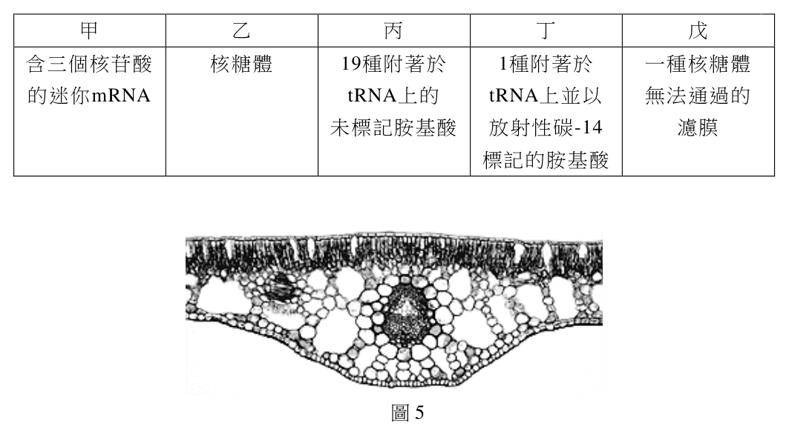
（A） 浮葉植物,因為氣孔分布在上表皮（B） 陸生植物,因為維管束有明顯的厚
細胞壁（C） 沉水植物,因為沒有氣孔（D） 挺水植物,因為有發達的通氣組織
圖5答案：（A）
詳解與考點 正解：浮葉植物的葉片下表面接觸水面，氣體交換主要由露在空氣中的上表皮進行，因此氣孔集中於上表皮是最有辨識力的線索。（A）正確，故選 A。
B：（B）維管束細胞壁較厚是輸導與支持構造的性質，並非陸生植物專有，不能單憑此判定生活型。
C：（C）沉水葉常缺乏或極少氣孔，但本題用上表皮氣孔作為判準，與沉水植物的適應方式不符。
D：（D）通氣組織可見於多種水生植物，不能單獨區分挺水與浮葉；氣孔位於哪一面才直接連結到葉片是否浮在水面。
本題考點：水生植物適應（aquatic-plant adaptation）——從葉片接觸空氣或水的表面推論氣孔分布；氣孔（stoma）——浮葉的上表皮較利於氣體交換；通氣組織（aerenchyma）——提供內部氣體通道，但不是單一生活型的專屬特徵。
第 30 題
某生想製備組織切片,以利用顯微鏡觀察腎小體的構造。圖6為
豬腎臟縱切剖面,該生應該取哪一部分的薄片來製作玻片標本?
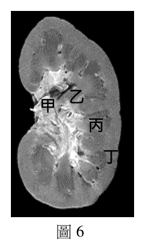
（A） 甲（B） 乙 乙 甲（C） 丙 丙（D） 丁 丁
圖6答案：（D）
詳解與考點 正解：腎小體由腎絲球與鮑氏囊構成，分布在腎臟的皮質；圖中（D）所標示的部位對應腎皮質，取此處薄片才容易觀察到腎小體，故選 D。
A：（A）此標示部位不在腎皮質；即使可見腎小管或其他腎組織，也不是尋找腎小體的主要取樣區。
B：（B）腎小體不分布於此標示的非皮質區，取樣無法直接達成觀察腎絲球與鮑氏囊的目的。
C：（C）此標示位置同樣不是腎皮質，不能因它位於腎臟內部就推論會含有腎小體。
本題考點：腎小體（renal corpuscle）——由腎絲球與鮑氏囊組成，是濾液形成的起始構造；腎皮質（renal cortex）——腎小體主要分布處，製作切片前先以組織位置決定取樣；腎臟分區（renal anatomy）——髓質、腎盂等區域的功能與皮質不同，不能互相代替。
第 31 題
以顯微鏡觀察小腸的橫切面永久玻片,可見到小腸壁平滑肌組織的切面方向為何?
（A） 呈橫切面（B） 呈縱切面（C） 橫切面與縱切面均有（D） 平滑肌的切面無規則答案：（C）
詳解與考點 正解：小腸肌層有內環狀肌與外縱走肌兩層。將整段小腸作橫切時，外縱走肌纖維平行腸管長軸而呈橫切面，內環狀肌纖維繞腸管排列而呈縱切面，所以（C）橫切面與縱切面均有，故選 C。
A：只看到外縱走肌的橫切面，忽略了內環狀肌在同一玻片上的縱切面，不能完整描述小腸壁平滑肌。
B：只看到內環狀肌的縱切面，忽略外縱走肌的橫切面，同樣不完整。
D：平滑肌的切面方向由肌層的排列方向與切片平面決定，不是無規則出現。
本題考點：小腸肌層（muscularis externa）——判讀切片時先分出內環狀、外縱走兩層；組織切面——纖維與切片平面平行時呈縱切，垂直時呈橫切。
第 32 題
有關檢測生物組織中的還原醣、脂肪及蛋白質等成分的實驗敘述,下列何者正確?
（A） 本氏液可用來檢測樣品中是否含有澱粉的成分（B） 本氏液與葡萄糖水混合後隔水加熱,在液體中可以檢測出氧化亞銅(Cu2O)的存在（C） 油性椒紅素試劑,會因越多脂肪而越無法染色,進而有橘紅色沉澱物析出（D） 雙縮脲試劑中的銅離子會與蛋白質的雙硫鍵作用,而產生帶有紫色的硫酸銅沉澱答案：（B）
詳解與考點 正解：本氏液遇到還原醣並加熱時，Cu2+ 會被還原成氧化亞銅（Cu2O）並形成磚紅色沉澱。葡萄糖是還原醣，因此（B）本氏液與葡萄糖水混合後隔水加熱可檢測出氧化亞銅，故選 B。
A：本氏液檢測的是還原醣，不是澱粉；澱粉通常以碘液的顏色反應檢測。
C：油性椒紅素是脂溶性染劑，脂肪越多通常越容易出現橘紅色染色情形，不是越無法染色或以沉澱析出作判斷。
D：雙縮脲試劑中的銅離子是在鹼性條件下與蛋白質的肽鍵形成紫色錯合物，不是與雙硫鍵作用並形成硫酸銅沉澱。
本題考點：本氏試驗（Benedict's test）——先確認樣品是否為還原醣，再以加熱後的氧化亞銅沉澱判讀；蘇丹染色（Sudan stain）——脂溶性染劑染到脂肪時看染色區域，不以沉澱作為判準；雙縮脲試驗（Biuret test）——看到紫色反應時，判斷對象是肽鍵。
第 33 題
青蛙常以舌捕食昆蟲。圖7為青蛙頭部側面圖。青蛙的舌根位於圖中的何處?
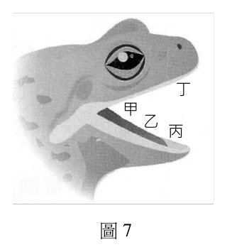
（A） 甲（B） 乙（C） 丙
丁（D） 丁
甲
乙
丙
圖7答案：（C）
詳解與考點 正解：青蛙的舌前端固定在口腔底部靠近下顎前方，後端較自由；捕食時可藉由舌的翻轉迅速向前伸出。因此圖中代表舌根固定處的是（C），故選 C。
A：（A）此處不是舌與口腔底部相連的固定點；判定舌根要看附著位置，不是看舌伸出後可到達的方向。
B：（B）舌根不在此標示的頭部構造處，青蛙的特殊構造是舌前端附著而非後端固定。
D：（D）此處亦非舌在口腔底部的連接位置，不能把自由端或鄰近構造當成舌根。
本題考點：兩生類攝食（amphibian feeding）——青蛙以快速外翻的舌捕捉獵物；舌的附著（tongue attachment）——青蛙舌的前端固定、後端自由，與許多哺乳類的構造不同；構造與功能（structure and function）——以固定端與可動端的關係推論捕食動作。
第 34 題 （多選）
圖8為利用顯微鏡所觀察到的甲、乙兩種植物木質部組織。 甲 乙
下列敘述哪些正確?
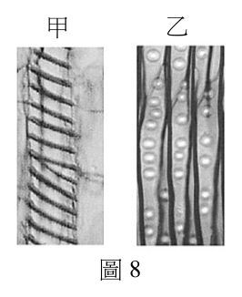
（A） 乙細胞只存在松柏類植物（B） 甲細胞上下之間交接處的細胞壁形成穿孔（C） 乙細胞負責輸送養分（D） 乙細胞兩端尖,兩細胞間以壁孔運輸（E） 甲、乙均可行有絲分裂,增加細胞數量
圖8答案：（B）（D）
詳解與考點 正解：共同判準是辨認兩種木質部輸導細胞的連接方式。甲為彼此首尾相接、交接處有穿孔的導管分子；乙為兩端尖、藉壁孔進行側向輸導的管胞，故選 BD。
B：甲細胞上下交接處形成穿孔，連成導管，有利水分長距離流動。
D：乙細胞兩端尖，相鄰管胞透過壁孔交換水分與礦物質，符合管胞的構造。
A：（A）乙為管胞，雖常見於松柏類植物，但不是只存在於松柏類；「只存在」把分布範圍說得過窄。
C：（C）木質部的主要輸送物是水與無機鹽，醣類等有機養分主要由韌皮部輸送，故答非所問。
E：（E）成熟的導管分子與管胞多已死亡、失去細胞質，不能再進行有絲分裂增加細胞數。
本題考點：木質部（xylem）——主要輸送水與無機鹽，成熟輸導細胞通常已死亡；導管分子（vessel element）——首尾穿孔相接形成導管；管胞（tracheid）——細長尖端、以壁孔進行水分輸導。
第 35 題 （多選）
觀察如圖9的生態球,只看到一個密封透明的玻璃容器中,約有十分之九的水,十分之一
的空氣,幾枝枯枝,容器底部有些貝殼砂,清澈的水中兩隻小蝦悠游其中。這樣密閉的
生態球需放在光亮且涼爽的地方,不需要打開透氣,也不需要另外
餵食,這兩隻小蝦可以存活一段相當長的時間。下列與此生態球
相關的敘述,哪些正確?
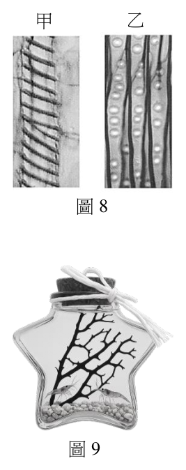
（A） 此球為密閉的生態系統,不需要外界提供能量（B） 水中小蝦為消費者（C） 此生態球中只有兩隻小蝦,不需要分解者（D） 此生態球中,應該有行光合作用的微型生物（E） 在此生態球中,完全藉由微生物進行化學自營提供能量 圖9答案：（B）（D）
詳解與考點 正解：密閉容器隔絕的是物質交換，不是能量交換；題幹明示需放在光亮處且小蝦能長期存活，表示系統內必須有生產者把光能轉成有機物，並與消費者、分解者形成物質循環，故選 BD。
B：水中小蝦必須攝食既有的有機物來獲得能量與構成物質，屬於消費者。
D：在不另外餵食的條件下，系統內須有能行光合作用的微型生物持續製造有機物與氧氣，才能支持小蝦存活。
A：生態球仍須接受光照作為能量來源；若完全沒有外界能量，系統內的能量轉換無法長期維持。
C：枯枝、排遺與死亡個體中的有機物仍要靠分解者分解，養分才能回到生產者可利用的型態；小蝦數量少不會取消分解作用的需求。
E：題幹把光亮列為必要條件，主要能量來源應是光合作用；化學自營不是此系統維持能量流的依據，也不能說小蝦完全由微生物提供能量。
本題考點：密閉生態系統（closed ecosystem）——密閉通常指物質進出受限，仍須判斷是否有外來光能；營養級（trophic level）——能自行製造有機物者為生產者，攝食有機物者為消費者；分解作用（decomposition）——看到枯枝、排遺或遺體時，要判斷分解者是否能使養分循環。
抗體若能識別特定細菌的抗原,且不會與其他種細菌的抗原產生交叉反應,就非常 適合開發成為檢測該特定細菌的專用試劑,來檢測樣本中是否有該抗原以及特定細菌。 某生利用感染甲細菌的病牛血液做實驗,打算篩選能檢測出特定病原體甲細菌存在之 抗體的檢測法。實驗中得到可以辨識細菌毒素或外膜蛋白的抗體A-D。 該生再進一步 表4
將此四種抗體分別 甲細菌 乙細菌 唾液樣本來源
與甲細菌、乙細菌 毒素X 外膜蛋白 毒素Y 外膜蛋白 病牛 健康牛 的毒素或外膜蛋白, 抗體A 有 有 無 無 無 無
以及牛唾液進行抗體
抗體B 有 無 有 無 有 無
抗原反應分析,結果
抗體C 無 有 無 無 有 無
如表4 所示,表中的
抗體D 有 有 無 無 無 有
有、無代表是否產生
抗體-抗原正反應。
114年分科 第 10 頁 請記得在答題卷簽名欄位以正楷簽全名生物考科 共 11 頁
第 36 題
下列何種抗體,最適合進一步的開發成檢測該特定病原體甲細菌的試劑?
（A） 抗體A（B） 抗體B（C） 抗體C（D） 抗體D答案：（C）
詳解與考點 正解：要開發檢測甲細菌的試劑，抗體必須能辨認甲細菌的抗原、不能和乙細菌交叉反應，且在病牛唾液中能檢出而健康牛唾液中不會誤報。表4中的（C）只與甲細菌外膜蛋白產生反應，對乙細菌兩種抗原皆無反應，並符合病牛有反應、健康牛無反應，故選 C。
A：抗體A雖未與乙細菌抗原交叉反應，但對病牛唾液也沒有反應，表示在題組指定的樣本中無法有效檢出目標。
B：抗體B會同時辨認甲細菌毒素X與乙細菌毒素Y；它可在病牛唾液出現反應，卻缺少區分甲、乙細菌的專一性。
D：抗體D對健康牛唾液有反應、對病牛唾液反而無反應，會造成假陽性且漏掉目標個體，不能作為檢測甲細菌的依據。
本題考點：診斷試劑的專一性（specificity）——先排除與非目標抗原的交叉反應；目標樣本的偵測能力——再看目標個體的樣本是否能被檢出；陰性對照（negative control）——健康樣本不應出現陽性訊號，否則須考慮假陽性。
第 37 題
上述檢測法是利用後天性免疫的何種特性?(2分)
本題選項為上圖中的 A／B／C／D，請對照圖片作答。
標準答案未收錄
詳解與考點 正解：題組要求用抗體把甲細菌與乙細菌分開，關鍵條件是只結合甲細菌的特定抗原、對乙細菌不產生交叉反應。這種抗原與抗體相互辨識的選擇性，就是後天性免疫的專一性，故選「專一性」。
本題考點：後天性免疫的專一性（specificity）——判斷檢測法時，看抗體是否只辨認目標抗原；抗原—抗體結合（antigen-antibody binding）——能結合不等於能診斷，還要排除與非目標抗原的交叉反應。
地錢是蘚苔類植物,除了行有性生殖,也具有無性繁殖的能力。地錢葉狀體上 有珠芽杯,珠芽杯內會產生許多珠芽。每一個珠芽脫離原本的葉狀體後,即可獨立發育 成一個完整的地錢植株。 甲 乙
(%) BA
研究發現有一地錢突變株, 野生型 log 突變株 100 0 μM 珠
其某種植物激素的合成酶基因 珠芽杯 俯視 芽杯 75 1 μM 形 50 5 μM
(log)功能發生缺失,結果 葉狀體 成 25 10 μM
比
導致形態上發生改變(圖10 甲)。 側面 率 0
野生型 log 突變株
此外,科學家利用不同濃度的 假根
丙 細胞分裂素(簡稱BA)添加
在野生型及log 突變株地錢 BA 0 μM 5 μM 10 μM 50 μM 中,並觀察其珠芽杯數量及 log 突變株
葉狀體形態的變化,結果
圖10
如圖10 乙、丙所示。
第 38 題 （多選）
下列有關本文的敘述,哪些正確?
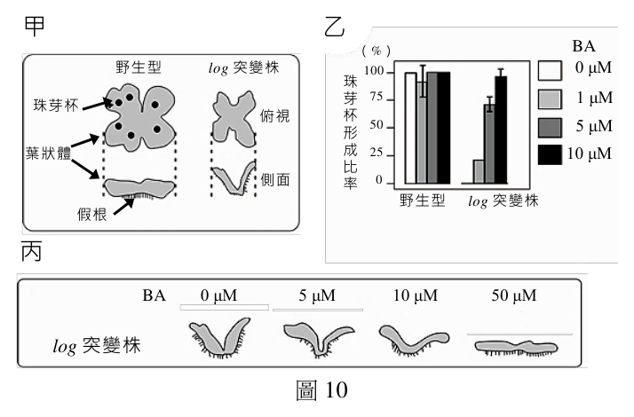
（A） 產生珠芽是地錢有性生殖的方式（B） 基因log可調控珠芽杯的形成（C） 珠芽杯的發育與BA濃度有關（D） 經實驗證明BA就是由log基因表現的蛋白質（E） 添加適當濃度的BA可以回復log突變株葉狀體的發育障礙答案：（B）（C）（E）
詳解與考點 正解：判準是區分珠芽繁殖的性質、log基因功能與外加BA實驗各自能支持的結論。log功能缺失會影響珠芽杯形成，改變BA濃度會改變珠芽杯的發育表現，而適當補加BA可改善突變株的葉狀體異常，故選 BCE。
B：log基因功能缺失伴隨珠芽杯形成異常，表示它參與調控珠芽杯的形成；「參與調控」不必等同於直接構成珠芽杯。
C：實驗以不同濃度BA處理並比較結果，能判斷珠芽杯的發育與BA濃度有關。
E：外加適當濃度BA後可改善log突變株的葉狀體發育障礙，支持BA能補償該突變造成的部分影響。
A：珠芽脫離母體後發育成新植株，沒有配子融合或受精過程，屬無性繁殖而非有性生殖。
D：log是與植物激素合成相關的基因，基因表現的產物是蛋白質；BA是植物激素。實驗可支持兩者的功能關聯，不能證明BA就是由log基因表現出的蛋白質。
本題考點：無性繁殖（asexual reproduction）——沒有配子融合而由母體構造形成新個體時，判為無性繁殖；基因與表型（gene-phenotype relationship）——比較野生型與功能缺失突變株，可推論基因參與的發育過程；補救實驗（rescue experiment）——外加可能缺乏的物質後表型改善，可支持該物質位於受影響的作用路徑。
第 39 題
根據圖10的研究結果,可以推測LOG蛋白質在植物體中的功能為何?(2分)
本題選項為上圖中的 A／B／C／D，請對照圖片作答。
標準答案未收錄
詳解與考點 正解：log被描述為植物激素合成酶的基因，功能缺失時珠芽杯與葉狀體發育異常，而補加BA可改善突變株表型。這組結果支持LOG蛋白質參與細胞分裂素（BA）的生成，而不是把BA本身當成蛋白質，故選「參與細胞分裂素（BA）的生成」。
本題考點：基因功能缺失（loss of function）——基因失去功能後出現的表型，可用來推論原基因參與的生理路徑；補救實驗（rescue experiment）——外加物質能改善突變表型時，判斷該物質與受影響路徑的關係；細胞分裂素（cytokinin）——遇到珠芽杯與發育調控時，要連結其對植物生長發育的作用。
某生由樣本甲(為一種病原體)萃取其基因體後, M 1 2 3 將此基因體分別利用DNA 水解酵素及RNA 水解酵素 bp 23130
處理後,再經膠體電泳分析,結果如圖11 所示。依本文 65509416 4360
及已習得知識,回答40-42 題。 2320
2020
第 40 題
樣本甲基因體為何種核酸?(2分)
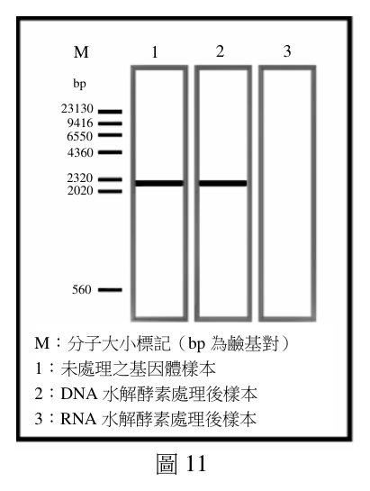
本題選項為上圖中的 A／B／C／D，請對照圖片作答。
標準答案未收錄
詳解與考點 正解：本題要比較DNA水解酵素與RNA水解酵素對同一基因體條帶的作用。若DNA水解後條帶消失，基因體為DNA；若RNA水解後條帶消失，則為RNA；未處理泳道只提供比較基準。故選與能將基因體條帶消除的水解酵素相對應的核酸種類。
本題考點：核酸酶專一性（nuclease specificity）——以DNA酶與RNA酶分別處理同一樣本時，條帶消失的處理組指出核酸種類；電泳對照（electrophoresis control）——未處理樣本用來確認處理前原本存在可比較的核酸訊號。
第 41 題
樣本甲應歸屬何種病原體?(2分)
560
本題選項為上圖中的 A／B／C／D，請對照圖片作答。
標準答案未收錄
詳解與考點 正解：圖11的核酸酶處理結果可用來辨識樣本甲的基因體，結合本題提供的病原體分類線索可判定其屬於病毒。病毒以核酸作為基因體，卻沒有可獨立增殖的完整細胞構造，故選「病毒」。
本題考點：病毒（virus）——看到核酸基因體與必須依賴宿主增殖的組合時，優先判為病毒；病原體分類（pathogen classification）——細菌、真菌與原生生物是細胞性生物，不能只因具有核酸就與病毒混同。
第 42 題
此病原體增殖時,為什麼一定需要宿主?(2分)
M:分子大小標記(bp 為鹼基對)
1:未處理之基因體樣本
2:DNA 水解酵素處理後樣本
3:RNA 水解酵素處理後樣本
圖11
本題選項為上圖中的 A／B／C／D，請對照圖片作答。
標準答案未收錄
詳解與考點 正解：此類病原體只有核酸基因體與少量必要成分，沒有核糖體、完整代謝系統與可獨立進行蛋白質合成的細胞機械。因此複製基因體、製造病毒蛋白質與組裝新粒子都要借用宿主細胞，故選「缺乏獨立增殖所需的細胞機械」。
本題考點：病毒的專性細胞內寄生（obligate intracellular parasitism）——問病毒為何需宿主時，要指出其缺乏獨立複製與蛋白質合成的系統；核糖體（ribosome）——沒有核糖體便無法自行把遺傳資訊轉譯成蛋白質。
東方蜂鷹主要覓食野生蜂巢內的蜂蛹,故得名蜂鷹。秋冬季節野花不多,蜂農為 補充蜜蜂的食物,把花粉混以黃豆粉,再加糖水攪拌凝成黃色的花粉團,供蜜蜂食用, 但蜂鷹卻常捷足先登取食花粉團。學者設計實驗去分析蜂鷹如何察覺而採食這項新食物, 結果如圖12。依本文及已習得知識,回答43-44 題。
30 8 30
覓 25 覓 6 覓 25
食 20 食 食 20
次 15 次 4 次 15
數 10 數 2 數 10
5 5
0 0 0
花粉粒 花粉粒 花粉粒 花粉粒 花粉粒
黃豆粉 黃豆粉 黃豆粉 黃豆粉 黃豆粉
糖 糖 糖 糖 糖
圖12
第 43 題
根據實驗結果,判斷蜂鷹前往覓食黃色花粉團的關鍵食物成分為何?(2分)
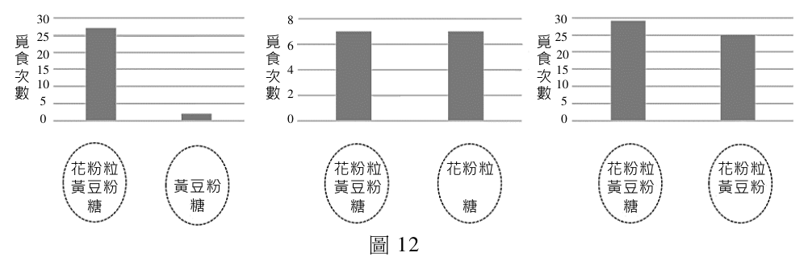
本題選項為上圖中的 A／B／C／D，請對照圖片作答。
標準答案未收錄
詳解與考點 正解：判斷關鍵食物成分時，要比較只改變一種成分的處理組；移除某成分後覓食次數明顯下降，且恢復該成分後覓食次數回升，才能把該成分判為主要誘發覓食的因子。故選符合這個因果判準的食物成分。
本題考點：控制變因（controlled variable）——探究單一食物成分的作用時，其餘成分、份量與觀察條件要維持一致；因果推論（causal inference）——單看某組覓食次數高不足以判定原因，須以移除與恢復的對照支持。
第 44 題
若想證實蜂鷹不是因爲被黃顏色所吸引而去食用花粉團,可以如何設計實驗?(2分)
本題選項為上圖中的 A／B／C／D，請對照圖片作答。
標準答案未收錄
詳解與考點 正解：實驗組與對照組應使用成分、質量、形狀、放置位置與觀察時間皆相同的花粉團，只改變外觀顏色，一組維持黃色、另一組改為非黃色。以重複試驗比較兩組覓食次數；若結果沒有差異，才支持黃色不是蜂鷹覓食的原因，故選「比較等成分的黃色與非黃色花粉團之覓食次數」。
本題考點：單一變因實驗（single-variable experiment）——驗證顏色的作用時，除了顏色以外的條件都要一致；對照組（control group）——對照組提供未改變顏色時的基準，才能把差異歸因於顏色。
哺乳動物血液中血糖的濃度受到嚴格監控,健康人體在飯後血糖濃度升高,胰臟 分泌胰島素降低血糖,當血糖濃度太低時,亦有其他激素參與血糖的調節。
第 45 題
胰島素可以刺激哪兩種器官或組織的細胞吸收血液中葡萄糖,並將其轉化為肝醣儲存?
(4分)
標準答案未收錄
詳解與考點 正解：飯後血糖升高時，胰島素促進肝臟與骨骼肌細胞攝取葡萄糖，並把可暫時儲存的葡萄糖聚合成肝醣。肝臟有助於維持血糖穩定，骨骼肌則儲存供自身活動使用的肝醣，故選「肝臟與骨骼肌」。
本題考點：胰島素（insulin）——血糖偏高時，判斷其促進細胞攝糖與肝醣合成；肝醣（glycogen）——葡萄糖要作短期儲存時，先判斷是否在肝臟或骨骼肌形成肝醣。
第 46 題
近年來新興藥物類升糖素胜肽-1(簡稱GLP-1)被用來治療第二型糖尿病。當血糖濃度
高於正常時,GLP-1可以直接刺激胰臟分泌胰島素,以控制血糖。GLP-1的受體最可能
表現在胰臟的哪一種細胞?(2分)
標準答案未收錄
詳解與考點 正解：GLP-1直接刺激胰臟分泌胰島素，因此受體應表現在製造並分泌胰島素的胰島β細胞。胰島α細胞主要分泌升糖素，作用方向與題幹要降低血糖的機制不同，故選「胰島β細胞」。
本題考點：胰島β細胞（beta cell）——看到胰島素分泌增加時，對應β細胞；胰島α細胞（alpha cell）——看到血糖過低或升糖素時，對應α細胞；受體表現（receptor expression）——激素直接作用的細胞必須具有相應受體。
光敏素為一種植物體色素蛋白,可感受光之刺激,藉以調控多項重要生理反應。 光敏素由蛋白質次單元和色素分子結合而成一個二聚體,有兩種吸收光譜不同的型式, 在兩型(Pfr 及Pr)間互相轉換。
第 47 題
在紅光及遠紅光的長時間處理後,光敏素的主要型式分別為何?(2分)
紅光 遠紅光
光敏素主要型式
標準答案未收錄
詳解與考點 正解：紅光會促使Pr轉為Pfr，持續以紅光處理後主要型式為Pfr；遠紅光則促使Pfr轉為Pr，持續以遠紅光處理後主要型式為Pr，故選「Pfr、Pr」。
本題考點：光敏素互變（phytochrome photoconversion）——紅光處理時由Pr判到Pfr，遠紅光處理時由Pfr判到Pr；光照處理時間——題目問長時間處理時，要填最終累積較多的型式而非起始型式。
第 48 題
具有生理活性的光敏素型式為何?(2分)
標準答案未收錄
詳解與考點 正解：光敏素兩型之中，Pfr是主要具有生理活性的型式；它累積後能引發下游訊號與植物發育反應，遠紅光使其轉回Pr後，這類反應會受到抑制，故選「Pfr」。
本題考點：光敏素活性型（active phytochrome）——問植物接收紅光後何型式傳遞訊號時，判為Pfr；可逆光反應（reversible light response）——紅光與遠紅光能讓Pr、Pfr互相轉換，判題時要追蹤最後的光照處理。
第 49 題
列出兩項光敏素調控的植物生理反應?(2分)
標準答案未收錄
詳解與考點 正解：光敏素可藉由Pr與Pfr的互轉感受紅光與遠紅光，進而調控植物對光的發育反應。常見例子包括種子萌發與開花時間調控，兩者都會隨光環境訊號改變，故選「種子萌發、開花調控」。
本題考點：光形態發生（photomorphogenesis）——遇到光訊號改變植物發育時，先判斷是否由光敏素參與；種子萌發（seed germination）——光條件影響萌發時，可連結紅光與遠紅光造成的光敏素型式變化；光週期性（photoperiodism）——題目問日長或夜長影響開花時，判斷是否涉及光敏素。
其他年度
回到分科測驗生物的年度總覽 ，
或到分科測驗題庫首頁 看其他科目。
題目與標準答案出自大考中心 分科測驗歷年試題（依著作權法 §9，考試試題不受著作權保護）。依中華民國《著作權法》第 9 條第 1 項第 5 款，
依法令舉行之各類考試試題不得為著作權之標的，得自由利用。詳解為 AI 整理的學習輔助，
並非官方標準答案 ；中華民國會修訂，引用前請對照現行版本查證。